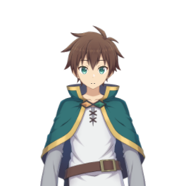
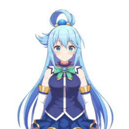
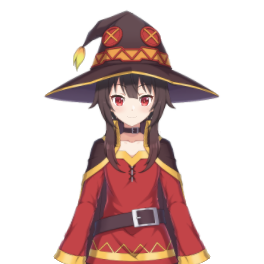
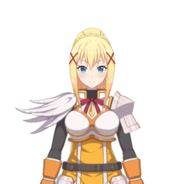

Fans d'animes et de gaming,
aventuriers intrépides et passionnés de mondes fantastiques, permettez-moi de vous présenter un projet tout droit sortie de nos rêves les plus épiques : bienvenue chez la merveilleuse équipe de vtubing proposé par l'intrépide bande de Fox: la FSVC!
Dans ce monde merveilleux, où le réel et la magie s'entremêlent, on vous offre une expérience inédite, inspirée du légendaire anime "Konosuba" ! Vous vous êtes jamais demandés ce que ça fait d'embarquer dans une quête pleine de comédie, de magie et d'amitié ?
Eh bien, avec la FSVC, on vous offre cette chance !
Laissez-moi vous présenter notre équipe incroyable de VTubers, chacun d'entre eux étant un personnage merveilleux à part entière :
1. Kazuma, l'intrépide :
Doté d'un charisme inégalable et d'un humour sans fin, il est notre aventurier principal, prêt à embarquer dans des quêtes époustouflantes et à affronter des monstres légendaires !


2. Aqua, la déesse espiègle :
Avec ses pouvoirs magiques désastreux et son étrange amour pour les problèmes, Aqua est notre atout comique, garantissant des situations hilarantes et des moments mémorables, que vous n'oublierez pas, du coup!
3. Megumin, magicienne explosive :
Aucun ennemi ne résiste à la puissance dévastatrice de mes explosions ! J'apporterai une touche d'action, de rage et de puissance à chaque live !


4. Darkness, croisée passionnée :
Toujours prête à se battre pour la justice et l'égalité, Darkness nous ajoutera une touche de dévotion et de bravoure à notre équipe, avec une touche d'excitation qui ne manque jamais ! Elle s'occupera aussi de reverser une partie des dons à une association.
Avec ces personnages hauts en couleur, on vous promet des émissions de streaming inoubliables, des moments de rire, de suspense, et d'émotions intenses ! Que vous soyez fan de Konosuba ou simplement à la recherche d'une aventure unique, un stream de la FSVC est l'endroit où vous devez être !
Caractéristiques de notre logiciel de vtubing :
- • Mode multijoueur: On affiche les avatars de toute la team en même temps sur tout nos streams ou vidéos !
- • Microphone virtuel: Parlons en français, la sortie sera en japonais ! Et sous-titré bien sûr !
- • Modèles Konosuba: Celui-là est peut-être un détail pour vous, mais pour moi ça veut dire beaucoup. Il y'a pour le moment 128 modèles !
- • Cross-platform: Disponible sur téléphone, ainsi que sur PC, Mac et Linux après rebuild si jamais vous voulez essayer.
- • Compatible avec les invitations de groupe Discord: Rejoindre le lobby d'un copain ? Cliquez sur un bouton !
- • Prise en charge de modèles custom: Oui, vous allez même pouvoir importer vos propres modèles !
Rejoignez-nous lors de nos diffusions en direct, où vous pourrez interagir avec nos VTubers préférés, participer à des quêtes interactives et même influencer le cours de nos aventures à travers et des tempêtes de chatvote!
Mais FSVC, ce n'est pas que du divertissement: c'est aussi une communauté soudée et chaleureuse, où des fans du monde entier se rassemblent pour partager leur passion pour l'animation, les jeux et la culture geek. Ensemble, nous formons une véritable famille d'aventuriers, inséparables et pret à tout pour aider l'autre!
Alors, n'attendez plus et embarquez dans cette aventure extraordinaire avec la FSVC, inspirée de l'univers de Konosuba ! Suivez-nous sur nos plateformes de streaming, nos réseaux, rejoignez notre Discord et plongez-vous dans un monde où votre imagination devient réalité !